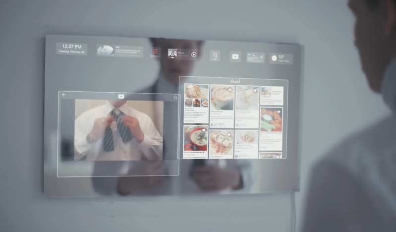
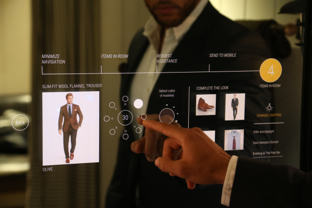

Czym jest i jak to działa
Smart Mirror
Smart Mirror jest multimedialnym urządzeniem, dzięki któremu możemy po za zwykłą funkcją lustra sprawdzić najważniejsze informacje. Może posiadać wiele funkcji, a ich ilość zależy od potrzeb konsumenta. Podstawowymi funkcjonalnościami są: sprawdzenia daty, godziny i pogody.
Popularność na tego typu produkty stale zwiększa się wraz z upływem czasu. Wynika to z z coraz większych potrzeb konsumentów na dostęp z każdego miejsca do informacji. Innowacyjny produkt jakim jest Smart Mirror wychodzi na przeciw oczekiwaniom konsumentów i zapewnia poczucie komfortu, a dzięki współpracy z wieloma partnerami w zakresie wykorzystania najnowszej technologii zapewniamy najwyższą jakość, nieustanny rozwój oraz niezawodność.
Smart Mirror jest kierowany do wszystkich instytucji bądź osób prywatnych zainteresowanych wygodą oraz potrzebą bycia na bieżąco z najnowszymi niezbędnymi informacjami. Oferujemy również szczegółowy poradnik na naszej stronie jak samemu można podobne urządzenie wykonać.
Interaktywne lustro to bezsprzecznie jeden z najczęściej pojawiających się w filmach i serialach science fiction gadżetów. Rozwiązania tego typu mogliśmy oglądać w kultowej „Pamięci absolutnej” z 1990 roku, zapomnianej już produkcji „Inteligentny dom” Disneya czy wybranych odcinkach brytyjskiego Black Mirror, które przedstawia dość mroczną wizję przyszłości.W filmach inteligentne lustra oferowały przeróżne funkcje. Część jedynie wyświetlała wybrane wiadomości, a inne umożliwiały samodzielne wyszukiwanie informacji czy prowadzenie rozmów wideo. Pojawiały się też rozwiązania obsługiwane przez sztuczną inteligencję, z którą bohater najczęściej komunikował się głosowo.
Czyli to czego potrzebujesz
Możliwości
Mimo iż technologie SMART nie przyjeły sie jeszcze w Polsce, mamy względem nich duże oczekiwania co do posiadanych funkcjonalności. Do najcześciej wymaganych naleźy połaczenie z Internetem co jest standardem w aktualnie wykozystywanych powszechnie urządzeniach mobilnych i nie tylko. Każdy użytkownik posiada odmienne preferencje co sprawia iż indywidualna personalizacja interfejsu jest wręcz nieodzowna. Jak już wczesnie wspominaliśmy nasze urządzenie jest kierowane do szerokiego grona odbiorców, co sprawia że intuicyjna obsługa staje sie jednym z najważniejszych punktów do spełnienia. Aktualnie kazdy z nas pozostaje w bliskim kontakcie z szerokim gronem znajomych lub rodziną, wynika z tego potrzeba ciagłego pozostawania w kontakcie za posrednictwem portali społecznościowych i tego typu aplikacjami w związku z czym urządzenia tego typu staraja sie zapewnic możliwość sygnalizowania nadejścia nowych wiadomości oraz wyswietlenia ich.
Wychodząc na przeciw nowym wymaganiom użytkowników oraz w zależności od zapotrzebowania wprowadzane sa nowe udogodnienia. Jako że żyjemy w ciągłym pospiechu właściwe zarządzenie czasem obecnie jest bardzo ważną cechą, dla tego pomomoc w organizacji planu dnia może znacznie poprawić wprowadzenie kalendarza lub terminarza. Będą one nam przypominac o najwazniejszych wydarzeniach które sobie zaplanowaliśmy. Komunikacja z urzadzeniem jest również istotnym aspektem, dlatego coraz cześciej komunikują sie z użytkownikiem za pomoca interfejsu głosowego. Coraz częściej wymagamy od najnowszych technologii aby zaspokojały potrzeby w wielu aspektach naszego życia. Biorąc pod uwagę coraz większą popularność serwisów filmowych urzadzenia dają możliwość użytkownikom np.: Netflixa oglądania filmów. Możliwości Smart Mirror ogranicza jedynie wyobraźnia oraz aktualne potrzeby uzytkowników, nowe udogodnienia będą pojawiać się na bierząco.